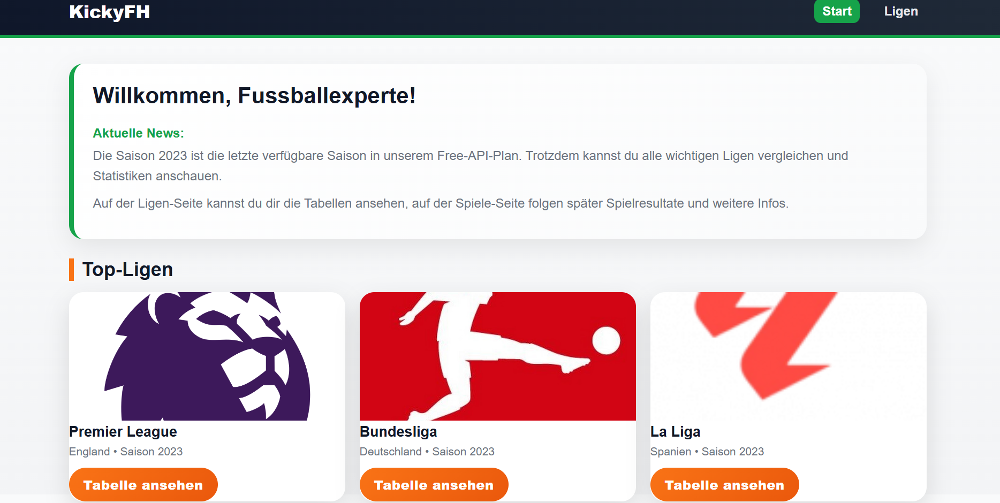
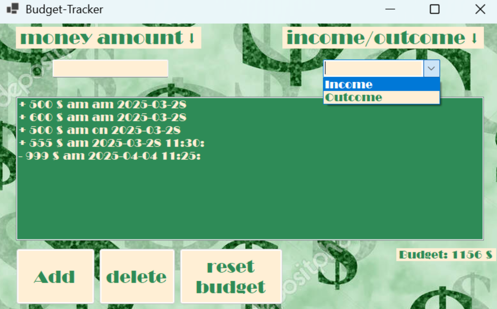
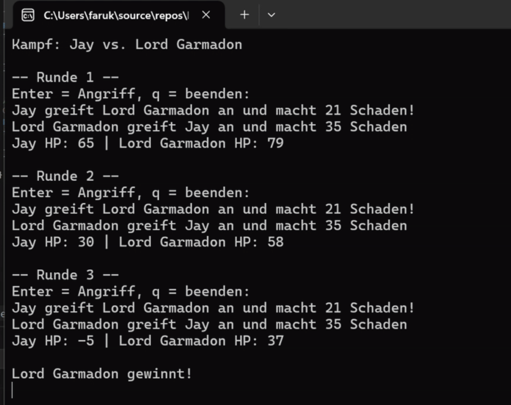

Kicky FH
Webseite, um Fussballresultate aus den Top-5-Ligen aufzurufen.
Kicky FH ansehenIMS-Schüler & angehender Informatiker
Ich entwickle Softwareprojekte mit Fokus auf Benutzerfreundlichkeit, sauberen Code und kreativen Lösungen.
Projekte ansehenIch besuche zurzeit die Informatikmittelschule und baue dort meine Grundlagen in Programmierung, Webentwicklung und Softwareentwicklung auf. Mein Ziel ist es, mich in diesen Bereichen weiterzuentwickeln und praktische Erfahrungen zu sammeln.
Besonders interessieren mich Webentwicklung, Benutzeroberflächen und praktische Anwendungen, die ein echtes Problem lösen oder den Alltag vereinfachen. für mich ist es wichtig, dass meine Projekte nicht nur technisch gut umgesetzt sind, sondern auch einen Mehrwert für die Nutzer bieten.
Besonders stolz bin ich auf mein Projekt Kicky FH, eine Webseite für Fussballresultate aus den Top-5-Ligen. Dabei konnte ich Technik, Design und Benutzerfreundlichkeit verbinden. Es war eine tolle Gelegenheit, mein Hobby und Vorlieben in einem Informatik-Projekt anzuwenden und weiterzuentwickeln.

Webseite, um Fussballresultate aus den Top-5-Ligen aufzurufen.
Kicky FH ansehen
Konsolenapplikation zum Verfolgen von Einnahmen und Ausgaben.
Budget Tracker ansehen
Konsolenapplikation mit objektorientierter Programmierung.
LEGO Ninjago ansehenSie können mich gerne per E-Mail kontaktieren oder mein GitHub-Profil ansehen.
 GitHub ansehen
GitHub ansehen